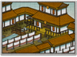
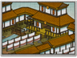

Requires

Enables
- Buildings:
 

Effects
- +6 charge bonus for all units
- +1 defence for all units
- +5% movement range for armies on the campaign map
- +5% to unit replenishment
Description
The warrior's way:
The wild rivers embrace it,
Even the earth knows it.
Permanent and unchanging,
Death before dishonour.
A poet walks in the forest and sees the sunlight, streaming through the trees. A monk sees the spirit in every tree. A peasant walks in the forest and ends his journey with supper. A warrior picks his killing ground.